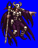
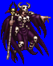
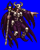
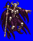

Height: Around 2 meters Weight: About 180 lbs.
Habitat: Private sanctum Origin: ???
Meaning: Greek "necro" (corpse) + "mancer" (magician)
A necromancer is one who is cause over the spirits of the dead, able to infuse unlife into those who have passed beyond. He is also able to speak to the spirits of the dead in order to learn about their experiences during their time in this world. In order to become a necromancer, years of training are needed. Although necromancy is not evil in and of itself, it is assumed that many who practice the art lose their sanity through prolonged contact with vengeful spirits.